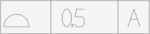
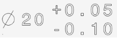

NIST CTC 01 ASME1 |
Product and Manufacturing Information (PMI) is used in 3D CAD and/or collaborative product development systems to convey information about the design of a product's components for manufacturing. More specifically, PMI conveys information such as geometric dimensioning and tolerancing (GD&T), 3D annotation (text), surface finish and material specifications.
The PMI related information is stored in the instances of ModelData_PMITable class. An object of this class could be attached to any scene graph element (ModelData_SceneGraphElement subclass) and contains complete PMI information related to the element.
PMI can be expressed via one of two (or both) PMI presentations:
The ModelData_PMITable stores PMI information as the collection of ModelData_PMIData objects and the collection of ModelData_PMISavedView objects. Each ModelData_PMIData object contains a graphical element (ModelData_PMIGraphicalElement) which stores graphical presentation of one PMI entity and corresponding semantic element (ModelData_PMISemanticElement) which stores semantic attributes. The content of ModelData_PMITable could be easily retrieved via iterators as shown below:
The following code demonstrates adding of a PMI data and saved view:
Thereby ModelData_PMITable could contain:
The PMI associations between PMI entities and topological entities (e.g. face or edge) are stored in ModelData_BRepRepresentation.
An instance of PMI data class corresponds to an elementary PMI entity such as dimension or tolerance measurement. The ModelData_PMIData class stores presentations of PMI entity:
The PMI data object could have properties (ModelData_PropertyTable).
| Type | Graphical presentation |
|---|---|
| ModelData_PMI_Dimension | |
| ModelData_PMI_Tolerance | |
| ModelData_PMI_FeatureControlFrame | |
| ModelData_PMI_Datum |
The ModelData_PMIGraphicalElement class stores a presentation of PMI entity or annotation in graphical form. The information to be presented can be stored in different ways therefore several types of components were introduced to keep each graphical data close to the original.
| Type | Dim | Description | Graphical presentation |
|---|---|---|---|
| ModelData_PMIOutlinedComponent | 2D/3D | Stores PMI graphical data expressed by outline(s) like unfilled text, lines, frames, arrows, etc. Outline is represented by polyline/polyline2d/curve/curve2d/composite. |

|
| ModelData_PMITextComponent | 2D | Stores PMI graphical data expressed by a string. | |
| ModelData_PMITriangulatedComponent | 3D | Stores PMI graphical data expressed by triangulation, like filled text or any other triangulated planar shape. |
The graphical element can contain one or more components. The components can be of any type.
In order to position 2D PMI data on the screen the reference planes are used. The ModelData_PMIPlane class presents such reference plane and stores a geometric plane. The plane could be shared between multiple graphical elements.
The ModelData_PMISemanticElement class stores a presentation of PMI entity in semantic form. The stored information may be annotations associated with a CAD model's edges and faces such as dimensional/geometric tolerances or datum features. Like graphical element semantic element may consists of several components (ModelData_PMISemanticElementComponent subclasses) each one representing specific semantic notation.
| Type | Description | Examples of corresponding graphical presentation |
|---|---|---|
| ModelData_PMIDimensionComponent | Stores PMI semantic data related to dimension measurement like nominal value, plus minus bounds, range limits, etc. |

|
| ModelData_PMIGeometricToleranceComponent | Stores PMI semantic data related to geometric tolerance measurement like magnitude value, modifiers, precedence of datum references, etc. | 
|
| ModelData_PMIDatumComponent | Stores PMI semantic data related to datum, datum feature symbol or datum target like label, index (if the datum is composite), datum target description, etc. |
Each component may have several attributes affecting the meaning of stored data.
| Type | Description | Applicable component |
|---|---|---|
| ModelData_PMIModifierAttribute | Defines the type of modification applied to a dimensional/geometric tolerance or a datum reference (e.g. statistical, free state, maximum material requirement, etc.). | DimensionComponent GeometricToleranceComponent DatumComponent |
| ModelData_PMIModifierWithValueAttribute | Defines the type of modification applied to a tolerance with additional value (e.g. minor diameter, etc.). | DimensionComponent GeometricToleranceComponent DatumComponent |
| ModelData_PMIQualifierAttribute | Defines the type of qualifier that can limit a tolerance (e.g. max, min, etc.). | DimensionComponent |
| ModelData_PMIPlusMinusBoundsAttribute | Defines a plus and minus bounds (deviations) of a tolerance. | DimensionComponent |
| ModelData_PMIRangeAttribute | Defines range of value. | DimensionComponent |
| ModelData_PMILimitsAndFitsAttribute | Defines a kind of a tolerance class dimension such as form variance, zone variance, grade, etc. (ISO 286) | DimensionComponent |
| ModelData_PMIDatumTargetAttribute | Defines a datum target data. Contains a description (e.g. a point, line or limited area of the part surface) and an index (if the datum is composite). | DatumComponent |
| ModelData_PMIDatumRefAttribute | Defines a datum reference. Stores a label of the datum and its precedence in a geometric tolerance. | GeometricToleranceComponent |
| ModelData_PMIDatumRefCompartmentAttribute | Defines a compartment of datum references or compartments. Stores a collection of datum references or compartments and optionally a collection of modifiers, which is applied to each added compartment. | GeometricToleranceComponent |
| ModelData_PMIMaximumValueAttribute | Defines a maximum value. | GeometricToleranceComponent |
| ModelData_PMIDisplacementAttribute | Defines a displacement value for an unequally disposed geometric tolerance. | GeometricToleranceComponent |
| ModelData_PMILengthUnitAttribute | Defines a length unit. | DimensionComponent GeometricToleranceComponent |
| ModelData_PMIAngleUnitAttribute | Defines an angle unit. | DimensionComponent GeometricToleranceComponent |
The PMI association is a relation between PMI entity and topological entity (e.g. face or edge). This relation is stored in ModelData_BRepRepresentation via the mechanism of subshape properties. This data could be easily retrieved via iterators as shown below:

Control_Cabinet_assm.jt |
nist_ctc_02_asme1_ct5210_rc.jt |
Saved views of a design model may be defined to facilitate presentation of the model and its annotation. The ModelData_PMISavedView class presents such saved view. It stores a customized camera (ModelData_PMICamera) and a selected set of graphical elements. The camera sets position and direction of the view point relative to the model.
The following code demonstrates adding of a graphical element (which should be displayed from this view):
Different CAD software and technical documents use different terms for the "saved view" concept. The following list of equivalent terms might help in technical discussions:
nist_ctc_04_asme1_ap242.stp |
nist_ftc_06_asme1_ap242.stp |
The PMI data could be extracted from the following formats: